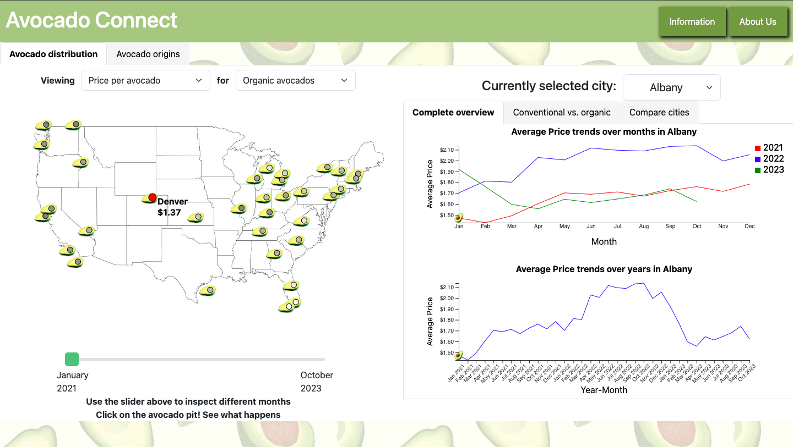
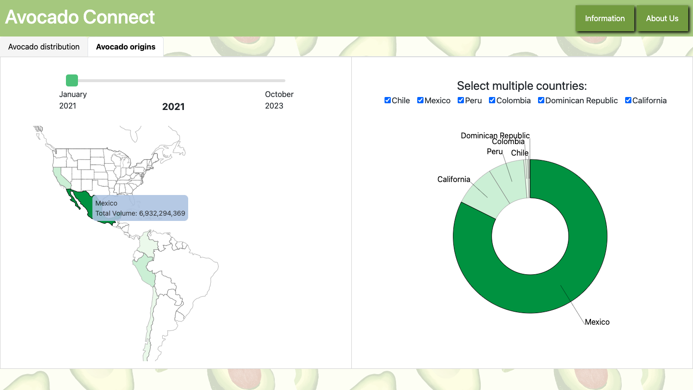

Avocado Connect: Empowering Local Distributors
My roles in the project: UX researcher/designer, coder.
Overview
Avocado Connect website provides essential insights for local avocado distributors to help
them manage imports and exports. The main focus of the platform is intuitive data visualization.
Key Features
- Price Transparency
- Get real-time pricing for organic and standard avocados.
- Visual tools help to negotiate better prices with farmers and set retail prices confidently.
- Organic vs. Standard Comparison
- Easily compare organic and standard avocados using simple intuitive charts.
- Understand availability, pricing, and consumer preferences at a glance.
- Geographic Insights
- Use interactive maps to see where avocados are grown and how they travel through the supply chain.
- Identify new growth opportunities based on regional data.
- Seasonal Trends
- Explore graphs showing seasonal changes in avocado supply and demand.
- Plan the inventory and pricing strategies effectively.
Benefits of Avocado Connect
- Optimized Procurement: Source avocados at competitive prices to increase the profits with data-driven insights.
- Consumer-Centric Offerings: Adjust the inventory based on what consumers want, supported by clear visual data.
- Strategic Planning: Use geographic and seasonal insights to create smart distribution strategies.
- Market Agility: Stay ahead in the avocado market with real-time data presented in an easy-to-understand format.